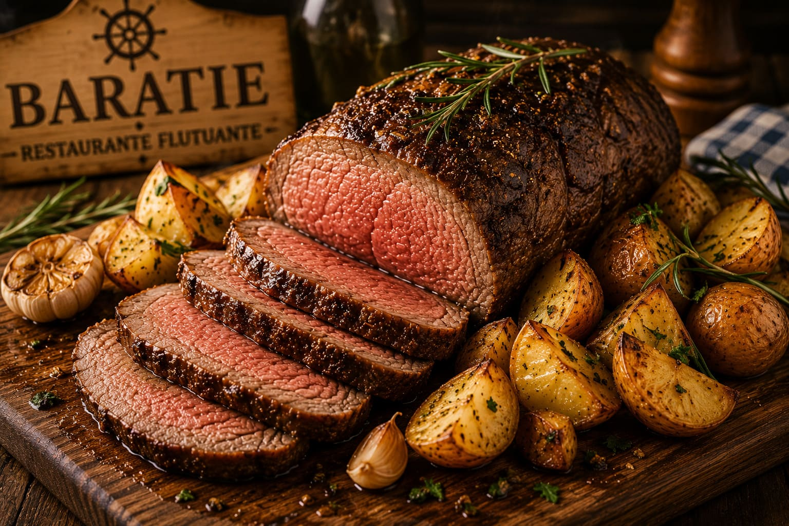

Carne Assada Baratie

Uma carne assada robusta, feita para alimentar piratas famintos depois de uma longa viagem pelos mares.
Tempo: 1 hora e 20 minutos
Rendimento: 6 porções
Dificuldade: Fácil
Ingredientes
- 1kg de alcatra ou maminha
- 4 batatas médias cortadas
- 3 dentes de alho amassados
- 2 colheres de sopa de azeite
- 1 colher de sopa de sal grosso
- 1 colher de chá de páprica
- Pimenta-do-reino a gosto
- Ramos de alecrim
Modo de Preparo
- Seque a carne com papel toalha para ajudar a dourar melhor.
- Misture o alho, azeite, sal, páprica e pimenta.
- Espalhe o tempero por toda a carne.
- Deixe descansar por pelo menos 20 minutos.
- Aqueça uma frigideira grande e sele todos os lados da carne.
- Coloque a carne em uma assadeira junto com as batatas.
- Adicione o alecrim por cima.
- Leve ao forno preaquecido a 200 graus por cerca de 45 minutos.
- Retire do forno e deixe a carne descansar por 10 minutos antes de cortar.
- Sirva com as batatas assadas.
Dica do Chef
Deixar a carne descansar antes de cortar ajuda a manter a suculência.